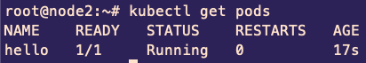
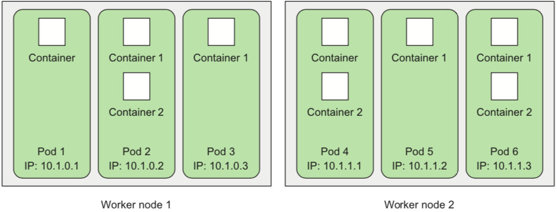
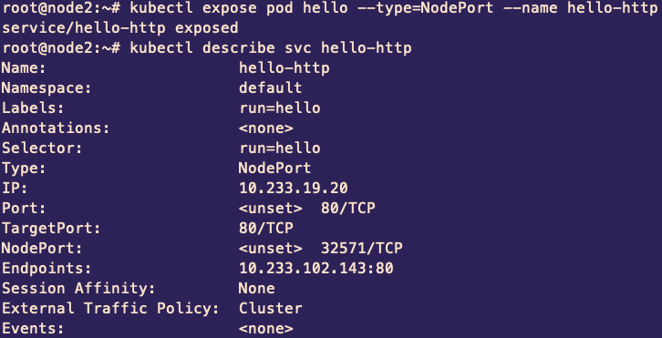
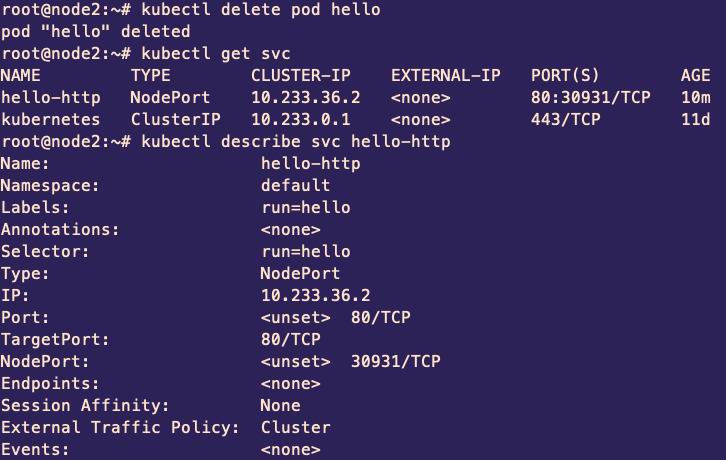
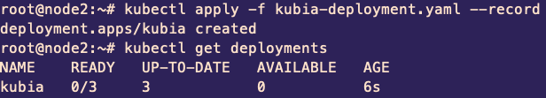
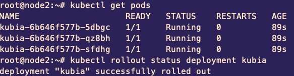

Основы Kubernetes

kubectl run hello \
--image=tutum/hello-world \
--port=80 \
--generator=run-pod/v1
docker ps?
kubectl get pods!

- основная рабочая единица kubernetes
- живёт только в рамках ноды
- может состоять из нескольких контейнеров
- хилит контейнеры
kubectl expose pod hello --type=NodePort --name hello-http
kubectl describe svc hello-http
- служит точкой входа для одного или многих подов
- не управляет подами!

apiVersion: v1
kind: Pod
metadata:
name: hello
labels:
creation_method: yaml
env: prod
run: hello
spec:
containers:
- image: tutum/hello-world
name: hello-world
ports:
- containerPort: 80
protocol: TCPkubectl apply -f hello-pod.yamlapiVersion: apps/v1
kind: ReplicaSet
metadata:
name: hello-replicaset
spec:
replicas: 3
selector:
matchLabels:
app: hello
template:
metadata:
labels:
app: hello
run: hello
spec:
containers:
- image: tutum/hello-world
name: hello-world
ports:
- containerPort: 80
- контролирует существование нужного количества копий пода
- создает недостающие поды или удаляет лишние
apiVersion: apps/v1beta2
kind: DaemonSet
metadata:
name: hello-daemonset
spec:
selector:
matchLabels:
app: hello
template:
metadata:
labels:
app: hello
run: hello
spec:
containers:
- image: tutum/hello-world
name: hello-world
ports:
- containerPort: 80
- liveness - жив ли под? (убить и создать новый)
- readiness - может ли под принимать трафик? (убрать endpoints на него)
Еще ресурсы?
- Job
- CronJob
- PersistentVolume
- PersistentVolumeClaim
- ConfigMap
- Secret
- StatefulSet
apiVersion: apps/v1beta1
kind: Deployment
metadata:
name: kubia
spec:
replicas: 3
template:
metadata:
name: kubia
labels:
app: kubia
spec:
containers:
- image: luksa/kubia:v1
name: nodejs
 
kubectl rollout undo deployment kubia